<!DOCTYPE html><html lang="ko"><head><meta charset="utf-8"><meta name="viewport" content="width=device-width,initial-scale=1">
<title>6회차 · 인공지능 모델과 웹 서비스</title>
<link rel="stylesheet" href="style.css?v=10">
<style>
/* 6회차 전용 — HTML 미리보기 · API 주소 조립기 */
.live{border:1px solid var(--line);border-radius:4px;background:var(--ink2);padding:18px;margin:16px 0}
.live .lrow{display:grid;grid-template-columns:1fr 1fr;gap:14px}
@media(max-width:760px){.live .lrow{grid-template-columns:1fr}}
.live textarea{width:100%;height:230px;background:#0a0b10;border:1px solid var(--line);border-radius:3px;color:#d8dae4;
 padding:12px 14px;font-family:var(--mono);font-size:12.5px;line-height:1.7;resize:vertical}
.live textarea:focus{outline:0;border-color:var(--accent)}
.live iframe{width:100%;height:230px;border:1px solid var(--line);border-radius:3px;background:#fff}
.live .cap2{font-size:11px;letter-spacing:.1em;text-transform:uppercase;color:var(--dim);font-weight:700;margin-bottom:6px}
.urlbox{border:1px solid var(--line);border-radius:4px;background:var(--ink2);padding:18px;margin:16px 0}
.urlbox .f{display:flex;gap:12px;flex-wrap:wrap;margin-bottom:12px}
.urlbox .f > div{flex:1 1 150px}
.urlbox label{display:block;font-size:12px;color:var(--mut);margin-bottom:5px;font-weight:600}
.urlbox input{width:100%;background:rgba(255,255,255,.04);border:1px solid var(--line);border-radius:3px;color:var(--tx);
 padding:9px 11px;font-size:13px;font-family:var(--mono)}
.urlbox input:focus{outline:0;border-color:var(--accent)}
.urlout{background:#0a0b10;border:1px solid var(--line);border-radius:3px;padding:13px 15px;font-family:var(--mono);
 font-size:12px;line-height:1.85;color:#d8dae4;word-break:break-all;margin-top:6px}
.urlout .k{color:var(--accent)}.urlout .v{color:var(--green)}.urlout .m{color:var(--rose)}
</style></head><body>

<div class="lhead" id="lhead"></div>
<div class="bnav" id="bnav"></div>
<div id="blocks"></div>
<div id="timer"></div>

<footer><div class="wrap-n">
  2026-2 온라인 공동교육과정 · 인공지능 융합프로젝트 — 대전대신고등학교 하진수<br>
  교과서 Ⅱ. 융합 프로젝트를 위한 기술 <b>88~101쪽</b> ·
  <a href="index.html" style="color:var(--accent)">운영실 메인</a> ·
  <a href="lesson05.html" style="color:var(--accent)">← 이전 회차</a> ·
  <button class="tbtn ghost" style="margin-left:6px" onclick="resetLesson()">이 회차 기록 초기화</button>
</div></footer>

<script>
const LESSON={
n:6,date:"2026.10.12",dow:"월",time:"17:00~21:00",ch:"21~24차시",mode:"원격 수업",
title:"인공지능 모델과 웹 서비스",
goals:[
 "인공지능 모델의 학습 과정을 단계별로 이해하고, 분류와 객체 인식 등 다양한 기계학습 유형을 구별할 수 있다.",
 "생성형 인공지능을 활용하여 웹 페이지 제작을 위한 HTML, CSS, JavaScript 구조를 이해하고 구현할 수 있다.",
 "API로 데이터를 주고받고, 이를 웹 페이지에서 표현하는 프로그램을 작성할 수 있다."],
breaks:[{after:3,mins:10},{after:4,mins:10}],
blocks:[

/* ============ 0. 도입 ============ */
{kind:"open",nav:"도입",mins:10,title:"오늘 급식 뭐야?",
 sub:"오늘은 우리 학교 급식 메뉴를 <b>스스로 불러오는 웹페이지</b>를 만듭니다.",
 sections:[
 {n:"01",h:"오늘의 질문",
  html:`<div class="hook"><div class="hk">Hook</div>
   <div class="hq">학교 홈페이지의 급식 메뉴는<br>누가 매일 바꿔 넣는 걸까?</div>
   <p>아무도 손으로 넣지 않습니다. <b>교육청 서버에서 자동으로 받아 옵니다.</b>
   오늘 그 통로가 무엇인지 배우고, 여러분도 <b>똑같은 것을 직접 만듭니다.</b>
   수업이 끝날 때 여러분의 화면에는 <b>오늘 우리 학교 급식</b>이 떠 있을 겁니다.</p></div>
   <div class="ask"><div class="ah">발문 · 채팅창에</div>
   <ol>
    <li>학교 홈페이지에서 <b>내일 급식</b>도 볼 수 있나요? 그건 어떻게 가능할까요?</li>
    <li>전국 <b>1만 개가 넘는 학교</b>가 각자 급식을 올린다면, 그 데이터는 어디에 모여 있을까요?</li>
   </ol></div>`},
 {n:"02",h:"출결과 준비 확인",
  html:`<div class="box warn"><b class="t">가장 중요 — 인증키를 발급받아 오셨나요?</b>
   지난 시간에 <b>open.neis.go.kr에서 인증키를 미리 발급받아 오라</b>고 안내했습니다.
   아직이라면 <b>지금 바로</b> 신청하세요. 승인까지 시간이 걸릴 수 있습니다. 강의 ③에서 발급 절차를 다시 안내합니다.</div>
   <div class="box"><b>확인해 주세요</b>
   <ul>
    <li>카메라를 켜고 이름을 <b>학교명_이름</b> 형식으로 바꿔 주세요.</li>
    <li>교과서 <b>88~101쪽</b>을 펴 두세요. Ⅱ단원 <b>3. 인공지능 모델과 웹 서비스</b>입니다.</li>
    <li><b>메모장</b>이나 VS Code 같은 텍스트 편집기를 열어 두세요. 오늘은 HTML 파일을 직접 만듭니다.</li>
    <li>생성형 AI(ChatGPT · Gemini)를 열어 두세요. 4회차에서 배운 <b>프롬프트 원칙</b>을 오늘 제대로 씁니다.</li>
   </ul>
   <div class="mini"><span>출결 1차 · 지금</span><span>2차 · 강의 종료 시</span><span>3차 · 토의 종료 시</span></div></div>
   <div class="box tip"><b>지난 2주 과제 확인</b> · 5회차에서 만든 센싱 코드를 실제로 돌려 보셨나요?
   막힌 지점이 있으면 지금 채팅창에 올려 주세요. 도입 시간에 함께 봅니다.</div>`},
 {n:"03",h:"교과서가 던지는 질문",
  lead:"교과서 88쪽 &lsquo;이번 시간 과제&rsquo;입니다.",
  html:`<div class="box warn"><b class="t">이번 시간 과제</b>
   최근 인공지능 기술이 다양한 분야에서 활용되면서, 학교에서도 인공지능에 관심을 갖는 학생들이 늘어나고 있다.
   학생들은 <b>얼굴을 인식해 자동으로 출석을 확인</b>하거나, <b>사진 속 사물을 구분</b>하는 등의 서비스가 어떻게 만들어지는지 궁금해한다.
   <br><br>이러한 서비스를 구현하려면 인공지능 모델을 만들고, 이를 웹 페이지와 연결해야 하지만, 프로그래밍 실력이나 전문 지식이 부족한 학생에게는 쉽지 않은 일이다.
   <br><br>하지만 요즘은 인공지능 모델을 직접 만들지 않아도, <b>필요한 기능을 API로 제공받아 웹 서비스에 적용할 수 있는 방법</b>이 생겨났다.
   이를 활용하면 복잡한 코딩 없이도 자신이 구상한 아이디어를 실제로 구현해 볼 수 있다.</div>`,
  pages:[{p:88,t:"3. 인공지능 모델과 웹 서비스 · 학습 목표 · 이번 시간 과제"}]},
 {n:"04",h:"오늘의 흐름",
  html:`<div class="tw"><table style="min-width:600px">
   <thead><tr><th style="width:80px">시간</th><th style="width:80px">교과서</th><th>하는 일</th></tr></thead>
   <tbody>
    <tr><td><b>강의 ①</b></td><td>89~91쪽</td><td>인공지능 모델 — <b>분류와 객체 탐지</b> · 사전 학습 모델 체험</td></tr>
    <tr><td><b>강의 ②</b></td><td>92~97쪽</td><td>웹 서비스 3요소 — <b>HTML · CSS · JavaScript</b> 직접 써 보기</td></tr>
    <tr><td><b>강의 ③</b></td><td>98~99쪽</td><td><b>API 연동</b> 4단계 · 인증키 발급 · 요청 주소 만들기</td></tr>
    <tr><td><b>과제</b></td><td>100~101쪽</td><td><b>급식 메뉴 조회 웹 페이지</b> 만들기</td></tr>
   </tbody></table></div>
   <div class="box tip"><b>오늘의 한 문장</b> · <b>모델을 만들지 않아도 쓸 수 있다.</b>
   남이 잘 만들어 둔 것을 <b>가져다 쓰는 법</b>을 아는 것도 실력입니다.</div>`}]},

/* ============ 1. 강의 ① ============ */
{kind:"lecture",nav:"강의 ①",mins:30,title:"인공지능 모델 — 분류와 객체 탐지",
 sub:"21차시 — 하나를 알아보는 것과, 여러 개를 찾아내는 것. 교과서 89~91쪽.",
 sections:[
 {n:"01",h:"인공지능 모델과 지도학습",
  lead:"인공지능 모델을 만드는 데에는 다양한 기계학습 방법이 사용됩니다. 그중 <b class='term'>지도학습</b>은 입력과 함께 제공되는 <b>정답(레이블)</b>이 있는 데이터를 이용해 모델을 학습하는 방법입니다.",
  html:`<div class="box tip"><b>2회차와 이어집니다</b> · 지도학습 · 비지도학습 · 강화 학습을 이미 배웠습니다.
   오늘은 그중 <b>지도학습</b>을 두 갈래로 더 쪼갭니다 — <b>분류</b>와 <b>객체 탐지</b>.</div>`},
 {n:"02",h:"① 분류 — 이것은 무엇인가",
  lead:"분류는 주어진 데이터를 <b>여러 범주 중 하나로 나누는</b> 작업입니다.",
  html:`<p>예를 들어 인공지능이 손 모양 이미지를 보고 &lsquo;가위&rsquo;, &lsquo;바위&rsquo;, &lsquo;보&rsquo; 중 하나로 판단하는 것이 분류입니다.
   <b>하나의 이미지에 하나의 답</b>이 나옵니다.</p>
   <figure class="fig">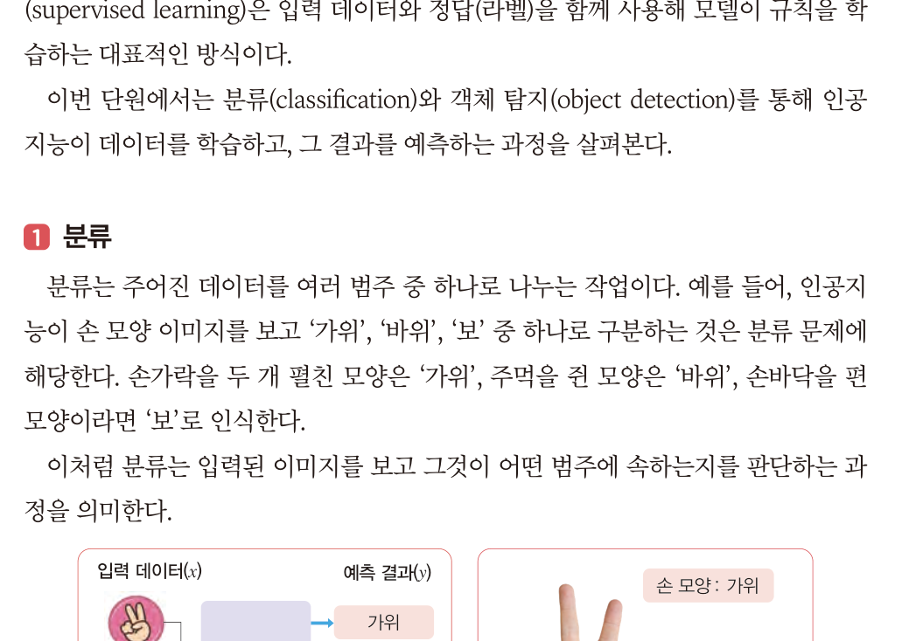
    <figcaption><b>교과서 89쪽 · 그림 Ⅱ-7</b> 학습된 인공지능 모델이 카메라 영상을 분석하여 손 모양을 인식하는 모습</figcaption></figure>
   <p>분류 문제를 해결하기 위해 여러 알고리즘이 활용됩니다. 그중 <b>의사결정트리</b>와 <b>서포트 벡터 머신(SVM)</b>이 대표적입니다.
   의사결정트리는 <b>속도가 빠르고 이해하기 쉬우며</b>, 서포트 벡터 머신은 <b>높은 정확도</b>를 보이는 특징이 있습니다.</p>
   <figure class="fig">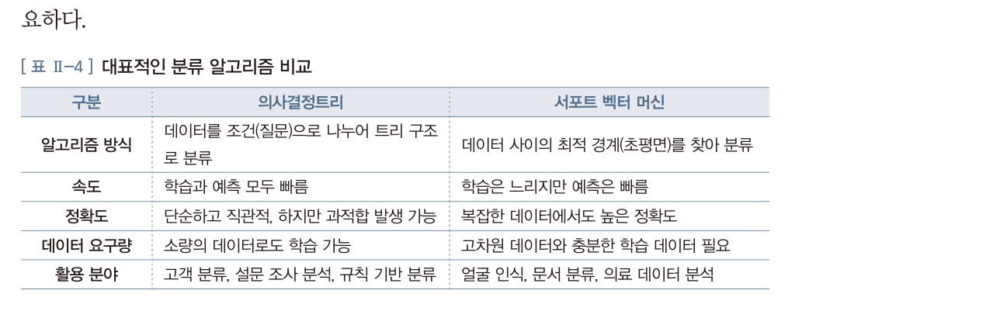
    <figcaption><b>교과서 89쪽 · 표 Ⅱ-4</b> 대표적인 분류 알고리즘 비교 — 의사결정트리와 서포트 벡터 머신</figcaption></figure>
   <div class="box"><b>&ldquo;각 알고리즘의 장단점을 이해하고, 문제의 특성에 맞는 방법을 선택하는 것이 중요하다.&rdquo;</b>
   교과서 89쪽의 문장입니다. 2회차부터 반복되는 <b>&lsquo;선택한 근거를 설명하기&rsquo;</b>가 여기서도 나옵니다.</div>`,
  pages:[{p:89,t:"인공지능 모델 · ① 분류 · 그림 Ⅱ-7 · 표 Ⅱ-4"}]},
 {n:"03",h:"② 객체 탐지 — 어디에 무엇이 있는가",
  lead:"객체 탐지는 이미지 속에서 <b>여러 물체를 동시에 찾아내어</b> 각각의 <b>위치와 종류</b>를 함께 판별하는 기술입니다.",
  html:`<figure class="fig">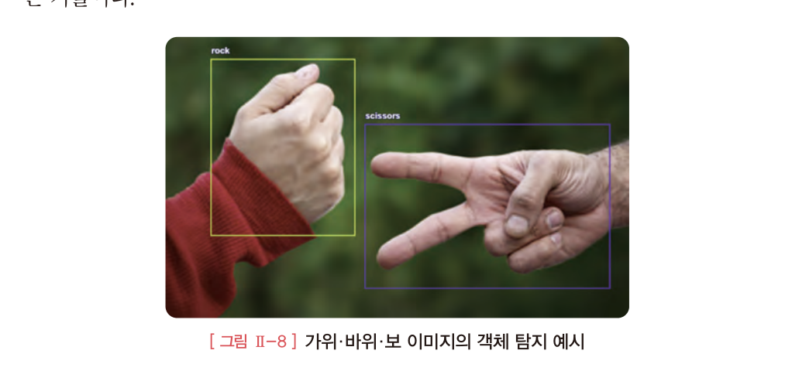
   <figcaption><b>교과서 90쪽 · 그림 Ⅱ-8</b> 가위·바위·보 이미지의 객체 탐지 예시 — 각 손 주위에 경계 상자(Bounding Box)가 그려집니다</figcaption></figure>
   <div class="tw"><table style="min-width:520px">
    <thead><tr><th style="width:110px">구분</th><th>분류 (classification)</th><th>객체 탐지 (object detection)</th></tr></thead>
    <tbody>
     <tr><td><b>답의 개수</b></td><td>이미지 <b>하나에 답 하나</b></td><td>이미지 하나에 <b>답 여러 개</b></td></tr>
     <tr><td><b>알려 주는 것</b></td><td>무엇인가</td><td>무엇이 <b>어디에</b> 있는가</td></tr>
     <tr><td><b>결과 표현</b></td><td>범주 이름</td><td>경계 상자 + 범주 이름</td></tr>
     <tr><td><b>예시</b></td><td>이 사진은 &lsquo;가위&rsquo;다</td><td>왼쪽에 &lsquo;주먹&rsquo;, 오른쪽에 &lsquo;가위&rsquo;가 있다</td></tr>
    </tbody></table></div>
   <p>객체 탐지 알고리즘 중 <b>YOLO</b>(You Only Look Once)와 <b>Faster R-CNN</b>이 대표적입니다.
   YOLO는 <b>처리 속도가 빠르며</b>, Faster R-CNN은 <b>정확도가 높다</b>는 특징이 있습니다.</p>
   <figure class="fig">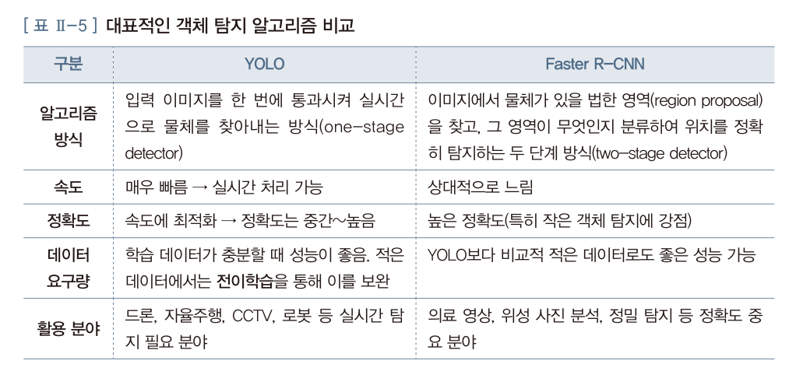
    <figcaption><b>교과서 90쪽 · 표 Ⅱ-5</b> 대표적인 객체 탐지 알고리즘 비교 — YOLO와 Faster R-CNN</figcaption></figure>
   <div class="doit"><div class="dh">골라 보기 <span class="m">4문항</span></div>
    <p>실제 상황입니다. 어느 알고리즘이 맞을까요?</p></div>
   <div class="netq" id="aq"></div>`,
  pages:[{p:90,t:"② 객체 탐지 · 표 Ⅱ-5 · 더 알아보기 사전 학습 모델"}]},
 {n:"04",h:"사전 학습 모델 — 남이 만든 것을 가져다 쓰기",
  lead:"교과서 90쪽 &lsquo;더 알아보기&rsquo;. 오늘 수업 전체를 관통하는 개념입니다.",
  html:`<figure class="fig">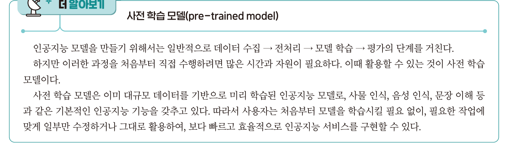
   <figcaption><b>교과서 90쪽</b> 더 알아보기 — 사전 학습 모델(pre-trained model)</figcaption></figure>
   <div class="box"><b>왜 필요한가</b> · 인공지능 모델을 만들려면 일반적으로 <b>데이터 수집 → 전처리 → 모델 학습 → 평가</b>의 단계를 거칩니다.
   하지만 이 과정을 처음부터 직접 수행하려면 <b>많은 시간과 자원</b>이 필요합니다.
   <br><br><b>사전 학습 모델</b>은 이미 대규모 데이터를 기반으로 미리 학습된 모델로, 사물 인식 · 음성 인식 · 문장 이해 등 기본 기능을 갖추고 있습니다.
   따라서 사용자는 처음부터 학습시킬 필요 없이, 필요한 작업에 맞게 <b>일부만 수정하거나 그대로 활용</b>해 더 빠르고 효율적으로 서비스를 구현할 수 있습니다.</div>
   <div class="box tip"><b>전이학습(transfer learning)</b> · 이미 학습된 모델의 지식을 새로운 문제에 적용하여,
   <b>적은 데이터와 시간으로도</b> 효율적으로 학습하는 방법입니다.</div>`},
 {n:"05",h:"해 보기 — COCO 데이터셋으로 객체 탐지 체험",
  lead:"교과서 91쪽. <b>COCO</b>(Common Objects in Context)는 일상생활에서 접할 수 있는 다양한 사물이 포함된 대규모 이미지 데이터로, 객체 탐지 모델 학습에 널리 활용됩니다.",
  html:`<figure class="fig">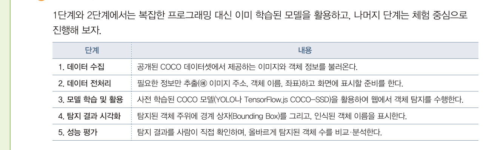
   <figcaption><b>교과서 91쪽</b> 실습 단계 — 1·2단계는 이미 학습된 모델을 활용하고, 나머지는 체험 중심으로 진행</figcaption></figure>
   <figure class="fig">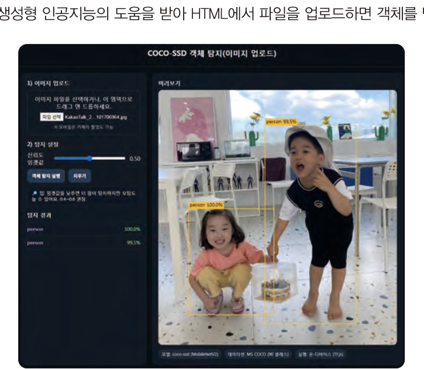
    <figcaption><b>교과서 91쪽 · 그림 Ⅱ-9</b> COCO-SSD 객체 탐지 실행 결과 — 사진을 올리면 사람 · 의자 · 컵 같은 물체를 찾아 상자로 표시합니다</figcaption></figure>
   <div class="doit"><div class="dh">체험 <span class="m">6분</span></div>
    <p>아래 두 사이트에서 <b>사전 학습 모델</b>이 실제로 어떻게 동작하는지 확인해 보세요.
    끝난 뒤 <b>&ldquo;모델이 잘못 인식한 물체&rdquo;</b>를 하나 찾아 채팅창에 올려 주세요.</p></div>
   <div class="reslist">
    <a class="res exp" href="https://cocodataset.org/#explore" target="_blank" rel="noreferrer">
     <div class="rk">체험 · COCO 데이터셋</div><div class="rt">COCO Explore</div>
     <div class="rd">교과서에 나온 그 데이터셋입니다. 사물 이름으로 검색하면 <b>사람이 직접 표시한 경계 상자</b>를 볼 수 있습니다. AI가 배우는 &lsquo;정답&rsquo;이 어떻게 생겼는지 확인하세요.</div>
     <div class="ru">cocodataset.org</div></a>
    <a class="res exp" href="https://teachablemachine.withgoogle.com/" target="_blank" rel="noreferrer">
     <div class="rk">체험 · Google</div><div class="rt">Teachable Machine</div>
     <div class="rd">직접 <b>분류</b> 모델을 만들어 봅니다. 오늘 배운 &lsquo;분류&rsquo;가 무엇인지 3분이면 몸으로 압니다. <b>9회차에 정식으로 사용</b>합니다.</div>
     <div class="ru">teachablemachine.withgoogle.com</div></a>
   </div>`,
  pages:[{p:91,t:"해 보기 — COCO 데이터셋 · 그림 Ⅱ-9 객체 탐지 실행 결과"}]}],
 quiz:[
 {q:"하나의 이미지를 특정 범주로 구분하는 과정을 무엇이라 하는가?",
  opts:["분류(classification)","객체 탐지(object detection)","군집화(clustering)","회귀(regression)"],
  a:0,why:"<b>분류</b>는 하나의 이미지를 특정 범주로 구분합니다. 객체 탐지는 이미지 안의 <b>여러 물체를 찾아 위치와 종류</b>를 식별합니다. 교과서 98쪽 주요 개념 정리."},
 {q:"객체 탐지 알고리즘 중 <b>처리 속도가 빨라 실시간 처리에 적합</b>한 것은?",
  opts:["의사결정트리","서포트 벡터 머신","YOLO","Faster R-CNN"],
  a:2,why:"<b>YOLO</b>(You Only Look Once)는 입력 이미지를 한 번에 통과시켜 물체를 찾아내는 one-stage detector로 실시간 처리가 가능합니다. 드론·자율주행·CCTV에 쓰입니다. 교과서 90쪽 표 Ⅱ-5."},
 {q:"의사결정트리와 비교했을 때 <b>서포트 벡터 머신</b>의 특징으로 옳은 것은?",
  opts:["학습과 예측이 모두 빠르다","복잡한 데이터에서도 높은 정확도를 보인다","소량의 데이터로도 학습이 가능하다","트리 구조로 결과를 설명하기 쉽다"],
  a:1,why:"①③④는 의사결정트리의 특징입니다. SVM은 데이터 사이의 최적 경계를 찾아 <b>복잡한 데이터에서도 높은 정확도</b>를 보이지만 고차원 데이터와 충분한 학습 데이터가 필요합니다. 교과서 89쪽 표 Ⅱ-4."},
 {q:"이미 대규모 데이터로 학습되어 있어, 처음부터 학습시키지 않고 가져다 쓸 수 있는 모델은?",
  opts:["사전 학습 모델","생성형 모델","군집 모델","회귀 모델"],
  a:0,why:"<b>사전 학습 모델(pre-trained model)</b>입니다. COCO-SSD가 그 예이며, 이를 새로운 문제에 적용하는 것을 <b>전이학습</b>이라고 합니다. 교과서 90쪽."}]},

/* ============ 2. 강의 ② ============ */
{kind:"lecture",nav:"강의 ②",mins:30,title:"웹 서비스 3요소 — HTML · CSS · JavaScript",
 sub:"22차시 — 뼈대를 세우고, 옷을 입히고, 움직이게 합니다. 교과서 92~97쪽.",
 sections:[
 {n:"00",h:"세 가지 역할을 한 문장으로",
  html:`<div class="hook"><div class="hk">Overview</div>
   <div class="hq">HTML은 뼈대,<br>CSS는 옷,<br>JavaScript는 움직임.</div>
   <p>앞에서 사전에 학습된 인공지능 모델을 활용해 보았다면, 이제는 그 모델을 <b>실제로 사용할 수 있도록 웹 서비스</b>로 만들 차례입니다.
   웹 서비스를 구현하려면 이 세 가지가 함께 쓰입니다.</p></div>
   <div class="grid g3">
    <div class="card"><h4>HTML — 구조</h4><p>HyperText Markup Language.
     <b>제목 · 이미지 · 문단</b> 등의 배치를 담당합니다. 특별한 개발 도구 없이 <b>메모장</b>으로도 작성할 수 있습니다.</p></div>
    <div class="card"><h4>CSS — 표현</h4><p>글자 크기, 색, 배경, 정렬을 정합니다.
     <b>선택자 { 속성 : 값 ; }</b> 형태로 씁니다.</p></div>
    <div class="card"><h4>JavaScript — 동작</h4><p>버튼 클릭이나 키보드 입력 같은 <b>사용자의 행동을 감지</b>하고 화면을 제어합니다.</p></div>
   </div>`},
 {n:"01",h:"① HTML — 문서의 뼈대",
  lead:"HTML 문서는 <span style='font-family:var(--mono)'>&lt;html&gt;</span>, <span style='font-family:var(--mono)'>&lt;head&gt;</span>, <span style='font-family:var(--mono)'>&lt;body&gt;</span>와 같은 태그로 구성됩니다.",
  code:[{name:"first.html — 가장 기본적인 HTML 문서",lang:"none",src:`<html lang="ko">
  <head>
    <meta charset="UTF-8">
    <title>나의 첫 웹 페이지</title>
  </head>
  <body>
    <h1>안녕하세요!</h1>
    <p>이것은 나의 첫 번째 웹 페이지입니다.</p>
  </body>
</html>`}],
  after:`<div class="tw"><table style="min-width:520px">
   <thead><tr><th style="width:130px">태그</th><th>역할</th></tr></thead>
   <tbody>
    <tr><td><span style="font-family:var(--mono)">&lt;html&gt;</span></td><td>문서 전체를 감싼다</td></tr>
    <tr><td><span style="font-family:var(--mono)">&lt;head&gt;</span></td><td>화면에 <b>보이지 않는</b> 정보 — 제목, 문자 인코딩, CSS 연결</td></tr>
    <tr><td><span style="font-family:var(--mono)">&lt;body&gt;</span></td><td>화면에 <b>보이는</b> 내용</td></tr>
    <tr><td><span style="font-family:var(--mono)">&lt;h1&gt;</span></td><td>제목 (h1이 가장 크고 h6까지 있다)</td></tr>
    <tr><td><span style="font-family:var(--mono)">&lt;p&gt;</span></td><td>문단</td></tr>
   </tbody></table></div>
   <div class="box tip"><b>작성과 실행</b> · 메모장에 위 내용을 적고 <b>파일 이름을 first.html로 저장</b>한 뒤 더블 클릭하면 브라우저에서 열립니다.
   저장할 때 <b>인코딩을 UTF-8</b>로 지정해야 한글이 깨지지 않습니다.</div>`,
  pages:[{p:92,t:"웹 서비스 · 1 HTML"},{p:93,t:"HTML 문서 작성과 실행 · 기본 구조 · 태그와 속성"}]},
 {n:"02",h:"직접 고쳐 보기 — 실시간 미리보기",
  lead:"왼쪽 코드를 고치면 오른쪽 화면이 <b>바로</b> 바뀝니다. 태그를 하나씩 지워 보면서 무엇이 사라지는지 확인해 보세요.",
  html:`<div class="live">
   <div class="lrow">
    <div><div class="cap2">HTML + CSS + JavaScript</div>
     <textarea id="htSrc" spellcheck="false"></textarea></div>
    <div><div class="cap2">브라우저 화면</div>
     <iframe id="htOut" sandbox="allow-scripts" title="미리보기"></iframe></div>
   </div>
   <div style="display:flex;gap:8px;flex-wrap:wrap;margin-top:12px">
    <button class="tbtn ghost" onclick="htLoad('basic')">기본 HTML</button>
    <button class="tbtn ghost" onclick="htLoad('css')">CSS 입히기</button>
    <button class="tbtn ghost" onclick="htLoad('js')">JavaScript 넣기</button>
    <button class="tbtn ghost" onclick="htLoad('form')">입력 유효성 검사</button>
   </div>
  </div>
  <div class="ask"><div class="ah">발문 · 직접 해 보기</div>
   <ol>
    <li><b>기본 HTML</b>에서 <span style="font-family:var(--mono)">&lt;h1&gt;</span>을 <span style="font-family:var(--mono)">&lt;h3&gt;</span>으로 바꾸면 어떻게 되나요?</li>
    <li><b>CSS 입히기</b>에서 <span style="font-family:var(--mono)">color: blue</span>를 다른 색으로 바꿔 보세요.</li>
    <li><b>JavaScript 넣기</b>에서 버튼을 눌러 보세요. 어느 줄이 그 동작을 만드나요?</li>
   </ol></div>`},
 {n:"03",h:"② CSS — 보기 좋게 만들기",
  lead:"웹 사이트는 단순히 정보를 제공하는 것을 넘어, 사용자에게 <b>시각적으로 쾌적한 화면</b>을 보여 주는 것이 중요합니다.",
  html:`<div class="box"><b>CSS의 기본 문법</b>
   <div style="font-family:var(--mono);color:var(--accent);margin:10px 0;font-size:14px">선택자 { 속성 : 값 ; }</div>
   <b>선택자</b> · 어떤 요소에 디자인을 적용할지 지정 (예 · p, h1, .클래스, #아이디)<br>
   <b>속성</b> · 무엇을 바꿀지 (color, font-size, text-align 등)<br>
   <b>값</b> · 어떻게 바꿀지 (blue, 16px, center 등)</div>`,
  code:[{name:"style.css",lang:"none",src:`h1 {
  color: blue;
  text-align: center;
}

p {
  font-size: 16px;
  line-height: 1.6;
}`}],
  after:`<div class="tw"><table style="min-width:520px">
   <thead><tr><th style="width:140px">적용 방법</th><th style="width:180px">어떻게 쓰나</th><th>언제 쓰나</th></tr></thead>
   <tbody>
    <tr><td><b>인라인</b></td><td>태그 안에 <span style="font-family:var(--mono)">style="..."</span></td><td>한 곳만 급히 바꿀 때</td></tr>
    <tr><td><b>내부 스타일</b></td><td><span style="font-family:var(--mono)">&lt;style&gt;</span> 태그 안에</td><td>파일 하나로 끝내고 싶을 때 — <b>오늘 과제는 이 방식</b></td></tr>
    <tr><td><b>외부 스타일</b></td><td>별도 .css 파일 + <span style="font-family:var(--mono)">&lt;link&gt;</span></td><td>여러 페이지에 같은 디자인을 쓸 때</td></tr>
   </tbody></table></div>
   <div class="box tip"><b>위 미리보기에서 확인하세요</b> · <b>CSS 입히기</b> 버튼을 누르면 같은 HTML에 스타일만 붙습니다.
   내용은 그대로인데 <b>보이는 모습만</b> 달라지는 것이 CSS의 역할입니다.</div>`,
  pages:[{p:94,t:"2 CSS · 기본 문법"},{p:95,t:"CSS 적용 방법 세 가지"}]},
 {n:"04",h:"③ JavaScript — 움직이게 하기",
  lead:"JavaScript는 웹 브라우저에서 동작하는 대표적인 프로그래밍 언어로, HTML과 CSS만으로는 할 수 없는 <b>동작</b>을 만듭니다.",
  html:`<div class="grid g3">
   <div class="card"><h4>사용자 입력 감지</h4><p>버튼 클릭이나 키보드 입력 등 사용자의 행동을 감지합니다.
    <br><span style="color:var(--dim)">예 · 급식 검색 버튼 클릭 시 입력한 날짜·학교 코드를 읽어 온다</span></p></div>
   <div class="card"><h4>화면 제어</h4><p>문서의 내용을 바꾸거나 새로 만들어 넣습니다.
    <br><span style="color:var(--dim)">예 · 받아 온 급식 메뉴를 화면에 표시한다</span></p></div>
   <div class="card"><h4>서버와 통신</h4><p>API를 호출해 데이터를 받아 옵니다.
    <br><span style="color:var(--dim)">강의 ③에서 배웁니다</span></p></div>
  </div>
  <div class="box"><b>코드 작성 위치</b> — 두 가지 방법이 있습니다. <span style="font-family:var(--mono)">&lt;script&gt;</span> 태그는 <span style="font-family:var(--mono)">&lt;head&gt;</span>나 <span style="font-family:var(--mono)">&lt;body&gt;</span> 내부에 위치해야 합니다.</div>`,
  code:[{name:"HTML 안에 직접 작성하기",lang:"none",src:`<script>
  // 여기에 JavaScript 코드 작성
  alert("안녕하세요!");
<\/script>`},
        {name:"외부 파일로 분리하기",lang:"none",src:`// script.js 파일
function greet() {
  alert("안녕하세요!");
}

// HTML 문서에서 불러오기
<script src="script.js"><\/script>`}],
  after:`<figure class="fig">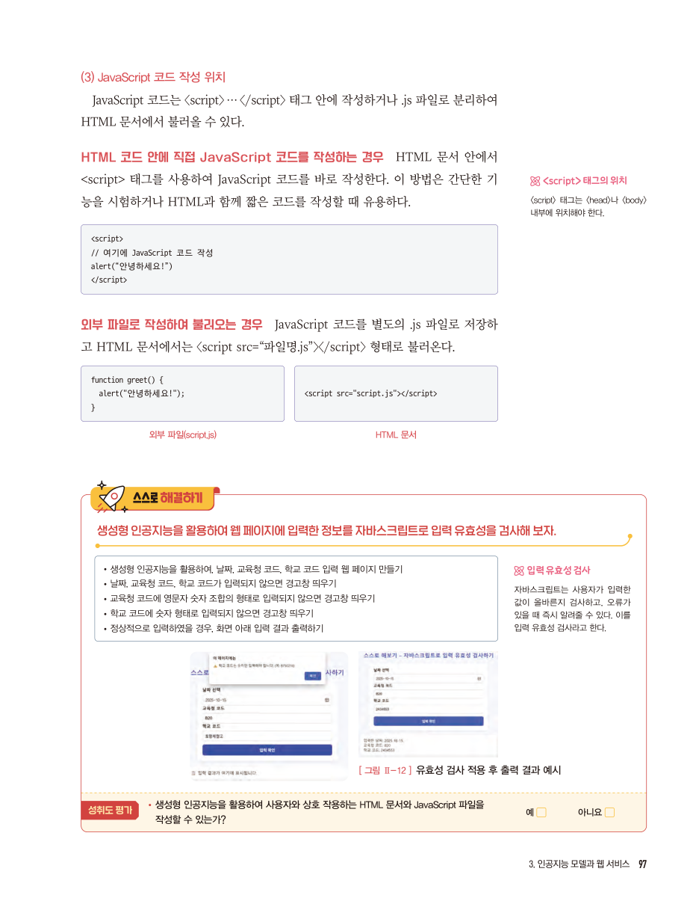
   <figcaption><b>교과서 97쪽</b> 스스로 해결하기 — 생성형 인공지능을 활용하여 입력 유효성을 검사해 보자</figcaption></figure>
   <div class="box"><b>입력 유효성 검사</b> · 자바스크립트는 사용자가 입력한 값이 <b>올바른지 검사</b>하고, 오류가 있을 때 즉시 알려 줄 수 있습니다.
   <br><br>교과서 97쪽의 요구 사항 — 날짜·교육청 코드·학교 코드가 입력되지 않으면 경고창을 띄우고,
   교육청 코드가 <b>영문자+숫자 조합</b>이 아니면 경고, 학교 코드가 <b>숫자 형태</b>가 아니면 경고, 정상이면 결과 출력.
   <br><br><b>위 미리보기의 &lsquo;입력 유효성 검사&rsquo; 버튼</b>을 눌러 직접 확인해 보세요.</div>`,
  pages:[{p:96,t:"3 JavaScript · 활용 예"},{p:97,t:"JavaScript 코드 작성 위치 · 스스로 해결하기"}]}],
 quiz:[
 {q:"HTML 문서의 기본 구조를 올바르게 나타낸 것은?",
  opts:["&lt;body&gt;, &lt;css&gt;, &lt;js&gt;","&lt;html&gt;, &lt;head&gt;, &lt;body&gt;","&lt;html&gt;, &lt;style&gt;, &lt;script&gt;","&lt;header&gt;, &lt;main&gt;, &lt;footer&gt;"],
  a:1,why:"HTML 문서는 <span style='font-family:var(--mono)'>&lt;html&gt;</span> 안에 <span style='font-family:var(--mono)'>&lt;head&gt;</span>와 <span style='font-family:var(--mono)'>&lt;body&gt;</span>가 들어가는 구조입니다. 교과서 93쪽."},
 {q:"CSS의 기본 문법으로 옳은 것은?",
  opts:["속성 { 선택자 : 값 ; }","선택자 { 속성 : 값 ; }","값 { 선택자 : 속성 ; }","선택자 ( 속성 = 값 )"],
  a:1,why:"<b>선택자 { 속성 : 값 ; }</b> 형태입니다. 어떤 요소에(선택자), 무엇을(속성), 어떻게(값) 바꿀지 지정합니다. 교과서 94쪽."},
 {q:"HTML · CSS · JavaScript의 역할을 바르게 짝지은 것은?",
  opts:["HTML — 동작 / CSS — 구조 / JavaScript — 표현","HTML — 구조 / CSS — 표현 / JavaScript — 동작","HTML — 표현 / CSS — 동작 / JavaScript — 구조","셋 다 같은 역할을 한다"],
  a:1,why:"HTML은 뼈대(구조), CSS는 옷(표현), JavaScript는 움직임(동작)입니다. 교과서 98쪽 주요 개념 정리."},
 {q:"사용자가 입력한 값이 올바른지 확인하고 오류가 있으면 즉시 알려 주는 것을 무엇이라 하는가?",
  opts:["입력 유효성 검사","객체 탐지","전이학습","결측치 처리"],
  a:0,why:"<b>입력 유효성 검사</b>입니다. 자바스크립트로 구현하며, 오늘 과제의 급식 조회 페이지에서도 학교 코드가 숫자인지 등을 검사합니다. 교과서 97쪽."}]},

/* ============ 3. 강의 ③ ============ */
{kind:"lecture",nav:"강의 ③",mins:30,title:"API 연동 — 데이터를 가져오는 통로",
 sub:"23차시 — 인증키를 발급받고, 요청 주소를 만들어 봅니다. 교과서 98~99쪽.",
 sections:[
 {n:"01",h:"API란 무엇인가",
  lead:"API는 프로그램과 프로그램이 서로 정보를 주고받을 수 있도록 하는 <b>&lsquo;데이터 통로&rsquo;</b>입니다.",
  html:`<p>다른 기관이나 서비스 업체가 보유한 데이터를 <b>외부 개발자가 손쉽게 가져와 사용할 수 있도록</b> 하는 정보 교환 창구라고 할 수 있습니다.</p>
   <div class="box"><b>API 사용 예</b>
    <ul>
     <li><b>스마트폰 날씨 앱</b> · 기상청 API를 이용해 날씨를 표시</li>
     <li><b>학교 홈페이지</b> · 교육청 API를 이용해 급식 메뉴를 자동으로 불러오는 것 ← <b>오늘 만들 것</b></li>
    </ul></div>
   <figure class="fig">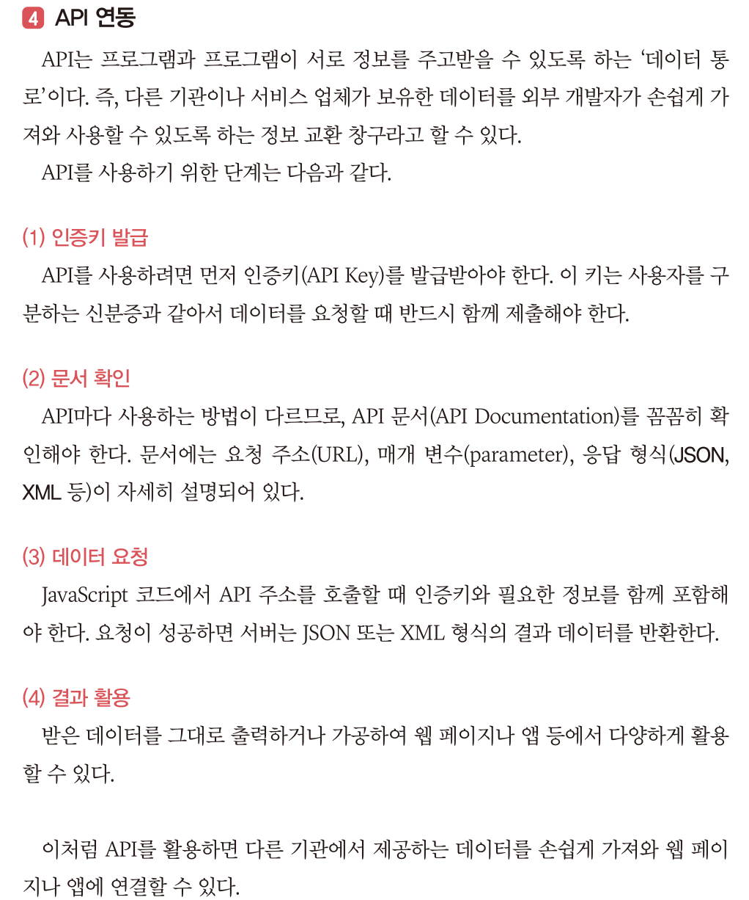
    <figcaption><b>교과서 98쪽</b> API 연동의 네 단계 — 인증키 발급 → 문서 확인 → 데이터 요청 → 결과 활용</figcaption></figure>
   <div class="flow">
    <div class="fstep"><div class="n">STEP 1</div><div class="t">인증키 발급</div><div class="d">사용자를 구분하는 <b>신분증</b>. 요청할 때 반드시 함께 제출</div></div>
    <div class="fstep"><div class="n">STEP 2</div><div class="t">문서 확인</div><div class="d">요청 주소(URL), 매개 변수, 응답 형식이 적힌 <b>사용 설명서</b></div></div>
    <div class="fstep"><div class="n">STEP 3</div><div class="t">데이터 요청</div><div class="d">JavaScript로 주소를 호출. 인증키와 필요한 정보를 함께 포함</div></div>
    <div class="fstep"><div class="n">STEP 4</div><div class="t">결과 활용</div><div class="d">받은 데이터를 그대로 출력하거나 가공해 화면에 표시</div></div>
   </div>
   <div class="grid g2">
    <div class="card"><h4>JSON</h4><p>데이터를 <b>키(key)-값(value)</b> 형태로 표현하는 방식. 가볍고 읽기 쉬워 웹에서 가장 많이 쓰입니다.
     <div style="font-family:var(--mono);color:var(--green);font-size:12px;margin-top:8px">{ "menu": "김치찌개", "calorie": 550 }</div></p></div>
    <div class="card"><h4>XML</h4><p>데이터를 <b>태그(tag)</b>로 감싸서 표현하는 방식. 문서의 구조가 명확하고 다양한 시스템에서 호환됩니다.
     <div style="font-family:var(--mono);color:var(--green);font-size:12px;margin-top:8px">&lt;menu&gt;김치찌개&lt;/menu&gt;<br>&lt;calorie&gt;550&lt;/calorie&gt;</div></p></div>
   </div>`,
  pages:[{p:98,t:"4 API 연동 · 주요 개념 정리하기"}]},
 {n:"02",h:"인증키 발급하기",
  lead:"교과서 99쪽. 교육정보 개방 포털에서 제공하는 API의 인증키를 발급받는 절차입니다.",
  html:`<div class="flow">
   <div class="fstep"><div class="n">①</div><div class="t">접속과 로그인</div><div class="d">open.neis.go.kr 접속 → SNS 계정으로 인증 및 로그인</div></div>
   <div class="fstep"><div class="n">②</div><div class="t">인증키 발급 신청</div><div class="d">마이페이지 → 인증키 발급 → 약관 동의 → 정보 입력 → 신청</div></div>
   <div class="fstep"><div class="n">③</div><div class="t">인증키 확인</div><div class="d">마이데이터 메뉴에서 발급된 인증키(API Key) 확인</div></div>
   <div class="fstep"><div class="n">④</div><div class="t">학교 코드 찾기</div><div class="d">데이터셋 → 급식식단정보 → Sheet에서 교육청·학교 코드 검색</div></div>
  </div>
  <figure class="fig">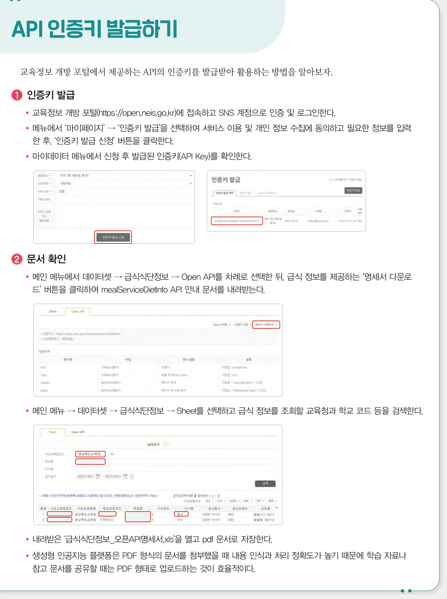
   <figcaption><b>교과서 99쪽</b> API 인증키 발급하기 — 화면을 보며 따라 하세요</figcaption></figure>
  <div class="box warn"><b class="t">인증키는 비밀번호입니다</b>인증키는 <b>여러분을 구분하는 신분증</b>입니다. 다른 사람이 쓰면 여러분 이름으로 요청이 나갑니다.
   <ul>
    <li>제출물이나 발표 자료에 인증키를 <b>그대로 넣지 마세요.</b> 앞 4자리만 남기고 가리세요.</li>
    <li>GitHub에 올릴 때도 마찬가지입니다. <b>11회차에서 다시 강조</b>합니다.</li>
    <li>2회차에서 배운 <b>&lsquo;보안 취약 위험&rsquo;</b>이 바로 이것입니다.</li>
   </ul></div>`,
  pages:[{p:99,t:"API 인증키 발급하기"}]},
 {n:"03",h:"요청 주소 직접 만들어 보기",
  lead:"아래 칸을 채우면 <b>실제로 동작하는 요청 주소</b>가 만들어집니다. 완성된 주소를 복사해 브라우저 주소창에 붙여 넣으면 급식 데이터가 보입니다.",
  html:`<div class="urlbox">
   <div class="f">
    <div><label>인증키 (API Key)</label><input type="text" id="uKey" placeholder="발급받은 인증키를 붙여 넣으세요"></div>
    <div><label>교육청 코드</label><input type="text" id="uOfc" value="G10" placeholder="예 · G10 (대전)"></div>
   </div>
   <div class="f">
    <div><label>학교 코드 (표준학교코드)</label><input type="text" id="uSch" value="7430058" placeholder="예 · 7430058"></div>
    <div><label>날짜 (YYYYMMDD)</label><input type="text" id="uDate" placeholder="예 · 20261012"></div>
    <div style="flex:0 0 auto"><label>&nbsp;</label><button class="tbtn ghost" onclick="uToday()">오늘 날짜</button></div>
   </div>
   <div class="cap2" style="font-size:11px;letter-spacing:.1em;text-transform:uppercase;color:var(--dim);font-weight:700;margin-top:14px">완성된 요청 주소</div>
   <div class="urlout" id="uOut">—</div>
   <div style="display:flex;gap:8px;flex-wrap:wrap;margin-top:12px">
    <button class="tbtn" onclick="uCopy()">주소 복사</button>
    <button class="tbtn ghost" onclick="uOpen()">브라우저에서 열어 보기</button>
    <span class="saved" id="uMsg"></span>
   </div>
   <div class="wshelp" id="uWarn"></div>
  </div>
  <div class="box tip"><b>교육청 코드 찾기</b> · 대전은 <b>G10</b>입니다. 다른 지역 학생은 교과서 99쪽 안내대로
  <b>데이터셋 → 급식식단정보 → Sheet</b>에서 학교 이름을 검색하면 교육청 코드와 표준학교코드가 함께 나옵니다.
  <br><br><b>주소 구조 읽기</b> · <span style="font-family:var(--mono)">?</span> 뒤부터가 <b>매개 변수</b>이고, <span style="font-family:var(--mono)">&amp;</span>로 구분합니다.
  <span style="font-family:var(--mono)">Type=json</span>을 <span style="font-family:var(--mono)">Type=xml</span>로 바꾸면 응답 형식이 바뀝니다.</div>
  <div class="ask"><div class="ah">발문</div>
   <ol>
    <li>주소를 열었더니 데이터가 안 나옵니다. <b>어디를 먼저 의심</b>해야 할까요?</li>
    <li>날짜를 <b>주말</b>로 바꾸면 어떻게 되나요? 급식이 없는 날의 응답은 어떤 모습일까요?</li>
    <li>이 주소를 친구에게 그대로 보내면 어떤 문제가 생길까요?</li>
   </ol></div>`}],
 quiz:[
 {q:"API를 사용하는 과정의 순서로 옳은 것은?",
  opts:["문서 확인 → 인증키 발급 → 데이터 요청 → 결과 활용","인증키 발급 → 문서 확인 → 데이터 요청 → 결과 활용","데이터 요청 → 인증키 발급 → 문서 확인 → 결과 활용","인증키 발급 → 데이터 요청 → 문서 확인 → 결과 활용"],
  a:1,why:"<b>인증키 발급 → 문서 확인 → 데이터 요청 → 결과 활용</b>입니다. 교과서 98쪽 주요 개념 정리."},
 {q:"데이터를 <b>키(key)-값(value)</b> 형태로 표현하며 가볍고 읽기 쉬워 웹에서 가장 많이 쓰이는 형식은?",
  opts:["JSON","XML","CSV","HTML"],
  a:0,why:"JSON(JavaScript Object Notation)입니다. XML은 태그로 감싸는 방식입니다. 교과서 98쪽."},
 {q:"API 인증키에 대한 설명으로 옳지 <b>않은</b> 것은?",
  opts:["사용자를 구분하는 신분증과 같다","데이터를 요청할 때 반드시 함께 제출해야 한다","여러 사람이 함께 쓰라고 공개하는 것이 좋다","다른 사람에게 노출되지 않도록 관리해야 한다"],
  a:2,why:"인증키는 <b>개인에게 발급되는 신분증</b>입니다. 공개하면 다른 사람이 내 이름으로 요청하게 되며, 2회차에서 배운 <b>보안 취약 위험</b>에 해당합니다."}]},

/* ============ 4. 과제 ============ */
{kind:"task",nav:"과제",mins:60,title:"급식 메뉴 조회 웹 페이지 만들기",
 sub:"24차시 · 교과서 100~101쪽 역량 키우기 활동. 오늘 배운 세 가지가 한 파일에서 만납니다.",
 sections:[
 {n:"01",h:"활동 안내",
  lead:"교육청 급식 공공데이터 API를 이용하여 <b>우리 학교의 오늘의 급식 메뉴</b>를 HTML 페이지에 표시하는 프로그램을 만듭니다.",
  html:`<figure class="fig">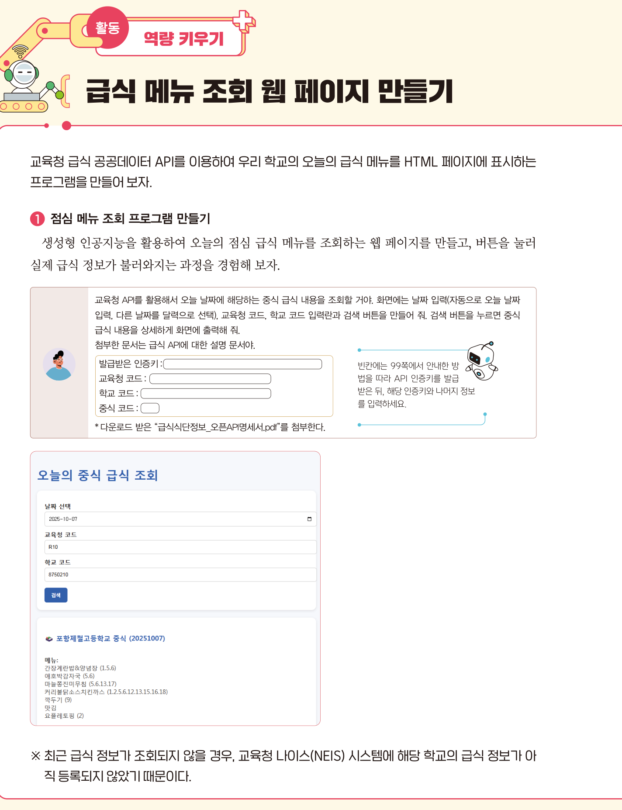
   <figcaption><b>교과서 100쪽</b> 역량 키우기 활동 — ① 점심 메뉴 조회 프로그램 만들기</figcaption></figure>
   <div class="box"><b>교과서가 제시한 프롬프트</b> (100쪽)
   <div style="border-left:2px solid var(--accent);padding:10px 14px;margin-top:10px;background:rgba(216,180,90,.05);font-size:13px;line-height:1.9">
   교육청 API를 활용해서 오늘 날짜에 해당하는 중식 급식 내용을 조회할 거야. 화면에는 날짜 입력(자동으로 오늘 날짜 입력, 다른 날짜를 달력으로 선택),
   교육청 코드, 학교 코드 입력란과 검색 버튼을 만들어 줘. 검색 버튼을 누르면 중식 급식 내용을 상세하게 화면에 출력해 줘.
   첨부한 문서는 급식 API에 대한 설명 문서야.</div>
   <div style="margin-top:10px">4회차에서 배운 원칙이 다 들어 있습니다 — <b>구체적 지시 · 명확한 단어 · 맥락 제공 · 구조 형식화.</b>
   여기에 &ldquo;<b>당신은 웹 개발 전문가입니다</b>&rdquo;(페르소나)와 &ldquo;<b>단계별로 설명해 줘</b>&rdquo;(CoT)를 더하면 더 좋습니다.</div></div>
   <div class="box warn"><b class="t">교과서가 미리 알려 준 함정</b>최근 급식 정보가 조회되지 않을 경우, 교육청 나이스(NEIS) 시스템에
   <b>해당 학교의 급식 정보가 아직 등록되지 않았기 때문</b>입니다. 코드가 틀린 것이 아닐 수 있으니, <b>며칠 전 날짜</b>로 먼저 확인해 보세요.</div>`,
  pages:[{p:100,t:"역량 키우기 활동 — ① 점심 메뉴 조회 프로그램 만들기"}]},
 {n:"02",h:"단계별 목표 — 어디까지 갈 것인가",
  html:`<figure class="fig">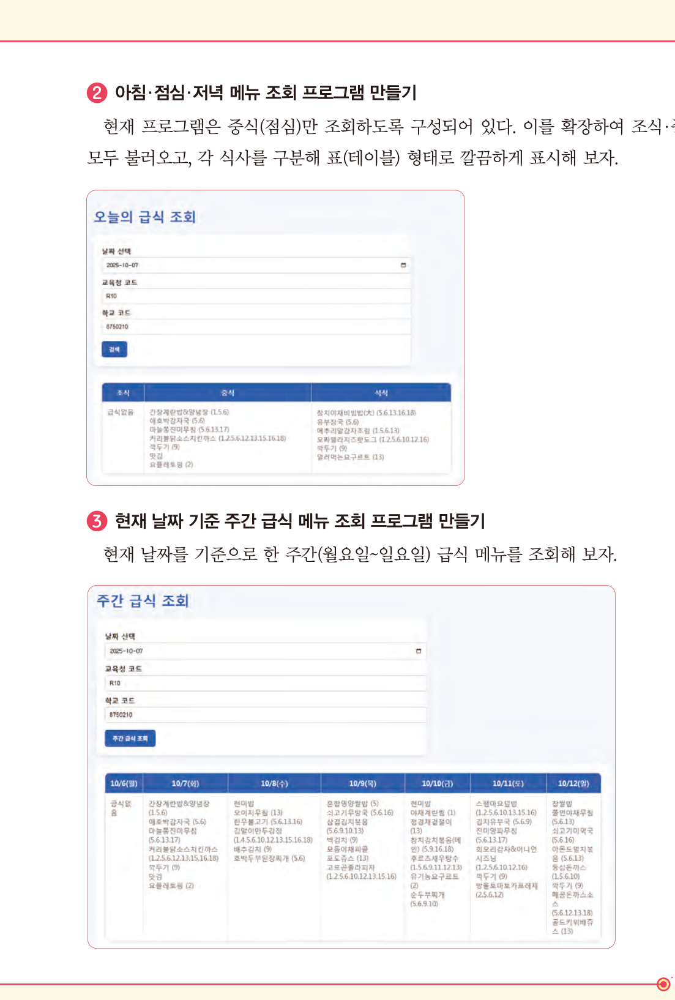
   <figcaption><b>교과서 101쪽</b> ② 아침·점심·저녁 메뉴 조회 · ③ 주간 급식 메뉴 조회</figcaption></figure>
   <div class="tw"><table style="min-width:560px">
    <thead><tr><th style="width:90px">단계</th><th style="width:200px">목표</th><th>화면</th></tr></thead>
    <tbody>
     <tr><td><b>① 기본</b></td><td>오늘의 <b>중식</b> 조회</td><td>날짜 · 교육청 코드 · 학교 코드 입력 + 검색 버튼 → 메뉴 목록 출력</td></tr>
     <tr><td><b>② 확장</b></td><td><b>조식 · 중식 · 석식</b> 모두 조회</td><td>각 식사를 구분해 <b>표(테이블)</b> 형태로 깔끔하게 표시</td></tr>
     <tr><td><b>③ 심화</b></td><td>현재 날짜 기준 <b>주간</b>(월~일) 조회</td><td>요일별 열로 나누어 한 주 전체를 한 화면에</td></tr>
    </tbody></table></div>
   <div class="box tip"><b>어디까지 해야 하나</b> · <b>①번은 필수</b>입니다. ②③은 도전 과제이며, 하나라도 성공하면 채점에서 &lsquo;상&rsquo;에 가까워집니다.
   중요한 것은 완성도보다 <b>막힌 지점에서 어떻게 물어봤는가</b>입니다.</div>`,
  pages:[{p:101,t:"② 아침·점심·저녁 메뉴 조회 · ③ 주간 급식 메뉴 조회"}]},
 {n:"03",h:"막혔을 때 — 오류 해결 순서",
  html:`<div class="tw"><table style="min-width:560px">
   <thead><tr><th style="width:180px">증상</th><th>먼저 확인할 것</th></tr></thead>
   <tbody>
    <tr><td><b>화면이 아예 안 뜬다</b></td><td>파일 확장자가 <span style="font-family:var(--mono)">.html</span>인지 · 인코딩이 UTF-8인지</td></tr>
    <tr><td><b>한글이 깨진다</b></td><td><span style="font-family:var(--mono)">&lt;meta charset="UTF-8"&gt;</span>가 있는지 · 저장할 때 UTF-8을 골랐는지</td></tr>
    <tr><td><b>버튼을 눌러도 반응이 없다</b></td><td>브라우저에서 <b>F12 → Console</b>을 열어 빨간 오류 메시지 확인</td></tr>
    <tr><td><b>데이터가 안 온다</b></td><td>강의 ③의 <b>주소 조립기</b>로 만든 주소를 브라우저에 직접 붙여 확인</td></tr>
    <tr><td><b>&ldquo;해당하는 데이터가 없습니다&rdquo;</b></td><td>날짜를 <b>평일</b>로 · 며칠 전 날짜로 바꿔 보기 (NEIS 등록 지연)</td></tr>
   </tbody></table></div>
   <div class="box"><b>AI에게 오류를 물어보는 법</b> · 4회차 <b>맥락 제공</b> 원칙입니다.
   &ldquo;안 돼요&rdquo;가 아니라 <b>&ldquo;이 코드에서 이 버튼을 눌렀더니 콘솔에 이런 메시지가 나옵니다&rdquo;</b>라고 물어야 합니다.
   <b>코드 + 증상 + 오류 메시지</b> 세 가지를 함께 주세요.</div>`}],
 worksheet:{title:"급식 메뉴 조회 웹 페이지 만들기",
  desc:"교과서 100~101쪽 활동입니다. 입력하는 즉시 저장되며, 다 쓰면 아래 <b>구글 문서로 만들기</b>로 제출하세요. <b>인증키는 앞 4자리만 남기고 가려서</b> 적으세요.",
  fields:[
  {label:"1. 내가 사용한 교육청 코드와 학교 코드",req:1,rows:2,hint:"어디서 찾았는지도 함께 적습니다. 인증키는 앞 4자리만 적고 나머지는 ***로 가리세요.",ph:"예) 교육청 코드 G10(대전), 학교 코드 7430058. open.neis.go.kr 데이터셋 > 급식식단정보 > Sheet에서 학교명 검색으로 찾았다. 인증키 = a1b2***"},
  {label:"2. 내가 만든 프롬프트",req:1,rows:5,hint:"AI에게 실제로 입력한 프롬프트를 그대로 적고, 4회차에서 배운 <b>어떤 원칙과 기법을 적용했는지</b> 표시합니다.",ph:"[프롬프트] 당신은 웹 개발 전문가입니다. 교육청 급식 API로 오늘 날짜의 중식을 조회하는 HTML 페이지를 만들어 주세요. 화면에는 날짜(기본값 오늘, 달력 선택 가능), 교육청 코드, 학교 코드 입력란과 검색 버튼이 있어야 하고, 결과는 메뉴를 줄바꿈해 보여 주세요. 단계별로 설명하며 작성해 주세요.\n[적용 원칙] ① 구체적 지시 ③ 맥락 제공 ④ 구조 형식화 + 페르소나 + CoT"},
  {label:"3. 완성한 단계와 실행 결과",req:1,rows:3,hint:"①기본 / ②조·중·석식 / ③주간 중 어디까지 성공했는지, 화면에 무엇이 나왔는지 적습니다. 캡처는 문서에 함께 붙이세요.",ph:"예) ①번 기본 조회 성공. 2026년 10월 8일 중식으로 8개 메뉴가 출력되었다. ②번은 조식이 없는 학교라 빈칸으로 나와서 '급식 없음'을 표시하도록 고쳤다."},
  {label:"4. 막혔던 지점과 해결 과정",req:1,rows:4,hint:"이 칸이 채점에서 가장 중요합니다. <b>무엇이 안 됐고, 무엇을 확인했고, 어떻게 물어봤고, 어떻게 풀렸는지</b> 순서대로 적으세요.",ph:"예) 버튼을 눌러도 아무 반응이 없었다. F12 콘솔에 'Failed to fetch'가 떴다. 강의 ③의 주소 조립기로 만든 주소를 브라우저에 직접 넣어 보니 데이터는 정상이었다. 그래서 fetch 부분 문제라고 판단하고, 코드와 오류 메시지를 함께 AI에게 물어 async/await 처리가 빠진 것을 찾았다."},
  {label:"5. HTML · CSS · JavaScript가 각각 한 일",req:1,rows:4,hint:"내가 만든 코드에서 세 가지가 각각 어느 부분을 담당했는지 짚습니다. 교과서 98쪽 주요 개념 정리와 연결하세요.",ph:"예) HTML — 날짜/교육청코드/학교코드 입력란과 버튼, 결과가 들어갈 빈 영역을 만들었다.\nCSS — 결과 영역에 배경색과 여백을 주어 읽기 편하게 했다.\nJavaScript — 버튼 클릭을 감지해 API 주소를 만들고, 받은 JSON에서 메뉴만 뽑아 화면에 넣었다."},
  {label:"6. 입력 유효성 검사 (교과서 97쪽 연계)",rows:3,hint:"입력이 비었거나 형식이 틀렸을 때 어떻게 처리했는지 적습니다. 아직 안 했다면 어떻게 하면 좋을지 계획을 적으세요.",ph:"예) 학교 코드가 숫자가 아니면 '학교 코드는 숫자만 입력하세요'라는 경고창을 띄우도록 했다."},
  {label:"7. 더 만들어 보고 싶은 기능",rows:3,hint:"급식 말고도 NEIS에는 학사일정·시간표 등 다양한 데이터가 있습니다. 내 프로젝트와 연결해 봐도 좋습니다.",ph:"예) 알레르기 유발 식품 번호를 실제 이름으로 바꿔 보여 주고 싶다. 내가 알레르기가 있는 항목이 있으면 빨간색으로 강조하면 좋겠다."}]},
 rubric:{title:"활동지 채점 기준표 — 급식 메뉴 조회 웹 페이지 만들기",
  area:"영역 2 · 융합 프로젝트 구현", areaPoints:40, when:"평가시기 9~10월 · 21~24차시",
  items:[
  {n:"API 연동 성공",pt:5,
   hi:"인증키와 코드를 정확히 넣어 <b>실제 급식 데이터를 화면에 출력</b>했고, 확장 단계(②③) 중 하나 이상을 시도했다.",
   mid:"기본 조회는 성공했으나 확장 시도가 없다.",
   lo:"데이터를 불러오지 못했다."},
  {n:"프롬프트 설계",pt:5,
   hi:"실제 프롬프트를 제시하고 <b>적용한 원칙·기법을 정확히 짚었으며</b>, 결과에 따라 개선한 흔적이 있다.",
   mid:"프롬프트는 제시했으나 원칙 연결이 약하거나 한 번에 그쳤다.",
   lo:"프롬프트 로그가 없다."},
  {n:"문제 해결 과정",pt:5,
   hi:"막힌 지점에서 <b>무엇을 확인했고 어떻게 좁혀 갔는지</b>를 순서대로 서술했다. 오류 메시지를 근거로 삼았다.",
   mid:"막힌 지점은 적었으나 해결 과정이 &lsquo;AI에게 물어봤다&rsquo; 수준이다.",
   lo:"내용이 없다."},
  {n:"웹 기술의 이해",pt:5,
   hi:"내 코드에서 HTML · CSS · JavaScript가 <b>각각 어느 부분을 담당했는지</b> 정확히 짚었다.",
   mid:"역할은 구분했으나 자기 코드와 연결하지 못했다.",
   lo:"구분이 불명확하다."},
  {n:"보안 · 확장 관점",pt:5,
   hi:"<b>인증키를 가려서</b> 제출했고, 입력 유효성 검사나 추가 기능을 구체적으로 제안했다.",
   mid:"인증키는 가렸으나 확장 제안이 막연하다.",
   lo:"인증키를 그대로 노출했거나 확장 내용이 없다."}],
  note:"이 활동지 <b>25점</b>은 영역 2(융합 프로젝트 구현, 40점) 중 <b>8점</b>으로 환산합니다. (환산 점수 = 활동지 점수 ÷ 25 × 8, 소수 첫째 자리 반올림)<br><b>오늘부터 영역 2가 시작됩니다.</b> 미제출은 0점이며, 마감 후 1주 이내 재제출은 배점의 80%까지 인정합니다."},
 tail:`<div class="box task" style="margin-top:20px"><span class="tag b">제출</span>
  <b>제출물</b> · 활동지 1부 (구글 문서) + <b>HTML 파일</b> + 실행 화면 캡처<br>
  <b>문서 이름</b> · <span style="font-family:var(--mono)">6회차_급식 메뉴 조회 웹페이지_학교명_이름</span><br>
  <b>제출 방법</b> · 활동지 아래 <b>[📄 구글 문서로 만들기]</b> → <b>Ctrl+V</b> → 문서 이름 변경 → 제출 폴더로 이동<br>
  <b>주의</b> · HTML 파일 안의 <b>인증키를 반드시 가린 뒤</b> 제출하세요<br>
  <b>마감</b> · 오늘 수업 종료 시각(21:00)까지</div>`},

/* ============ 5. 토의 ============ */
{kind:"talk",nav:"토의",mins:30,title:"가져다 쓴다는 것",
 sub:"소회의실 15분 → 전체 공유 15분.",
 sections:[
 {n:"01",h:"진행 방식",
  html:`<div class="flow">
   <div class="fstep"><div class="n">0~2분</div><div class="t">소회의실 배정</div><div class="d">3인 1조 · 서로 다른 학교 학생끼리</div></div>
   <div class="fstep"><div class="n">2~12분</div><div class="t">화면 공유</div><div class="d">한 사람당 3분 — 내가 만든 페이지와 막혔던 지점</div></div>
   <div class="fstep"><div class="n">12~15분</div><div class="t">논제 고르기</div><div class="d">아래 셋 중 하나로 조의 결론 만들기</div></div>
   <div class="fstep"><div class="n">15~30분</div><div class="t">전체 공유</div><div class="d">조별 1분 발표 + 교사 피드백</div></div>
  </div>`},
 {n:"02",h:"토의 논제",
  html:`<div class="box talk"><span class="tag g">논제 1 · 만들지 않고 쓰는 것</span>
   <b>사전 학습 모델을 가져다 쓴 것도 &lsquo;내가 만든 것&rsquo;인가?</b><br>
   오늘 우리는 COCO-SSD를 만들지 않았고, 급식 데이터도 우리가 모은 것이 아닙니다. AI가 코드도 상당 부분 써 주었습니다.
   그렇다면 <b>이 결과물에서 내 몫은 무엇</b>인가요? 12회차 성과공유회에서 &ldquo;이거 AI가 만든 거 아니에요?&rdquo;라는 질문을 받는다면 뭐라고 답하겠습니까?</div>
  <div class="box talk" style="margin-top:12px"><span class="tag g">논제 2 · 공공데이터의 값</span>
   <b>급식 데이터는 왜 무료로 공개되어 있을까?</b><br>
   전국 학교의 급식 정보를 모으고 관리하는 데는 비용이 듭니다. 그런데 누구나 무료로 가져다 쓸 수 있습니다.
   <b>왜 그럴까요?</b> 그리고 우리가 그 데이터로 <b>돈을 버는 서비스</b>를 만들어도 될까요? 2회차의 <b>저작권·라이선스</b>와 연결해 생각해 보세요.</div>
  <div class="box talk" style="margin-top:12px"><span class="tag g">논제 3 · 인증키를 잃어버린다면</span>
   <b>내 인증키가 유출되면 무슨 일이 생길까?</b><br>
   인증키는 신분증이라고 배웠습니다. 만약 누군가 내 인증키로 <b>하루에 백만 번</b> 요청을 보낸다면?
   그 책임은 누구에게 있을까요? 우리 조가 지킬 <b>인증키 관리 규칙 3가지</b>를 만들어 보세요.</div>`}],
 worksheet:{title:"토의 기록",
  desc:"조에서 나온 이야기를 정리합니다. 이 기록도 수행평가 관찰 근거가 됩니다.",
  fields:[
  {label:"1. 우리 조가 고른 논제와 결론",rows:3,hint:"결론은 한 문장으로. 반대 의견이 있었다면 함께 적습니다."},
  {label:"2. 다른 사람의 페이지에서 배운 점",rows:3,hint:"누구의 어떤 구현이 좋았는지, 내 코드에 무엇을 반영할지."},
  {label:"3. 내 결과물에서 고칠 부분",rows:2,hint:"토의 뒤 실제로 고쳤다면 무엇을 고쳤는지 적습니다."}]}},

/* ============ 6. 정리 ============ */
{kind:"close",nav:"정리",mins:30,title:"개념 정리와 다음 시간",
 sections:[
 {n:"01",h:"주요 개념 정리하기",
  html:`<figure class="fig">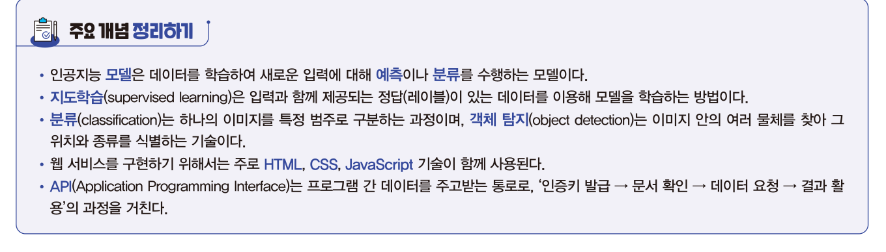
   <figcaption><b>교과서 98쪽</b> 주요 개념 정리하기</figcaption></figure>
   <div class="grid g3">
    <div class="card"><h4>인공지능 모델</h4><p>데이터를 학습하여 새로운 입력에 대해 <b>예측</b>이나 <b>분류</b>를 수행하는 모델</p></div>
    <div class="card"><h4>지도학습</h4><p>입력과 함께 제공되는 <b>정답(레이블)</b>이 있는 데이터를 이용해 모델을 학습하는 방법</p></div>
    <div class="card"><h4>분류 vs 객체 탐지</h4><p>분류는 <b>하나의 이미지를 특정 범주로</b>, 객체 탐지는 <b>여러 물체의 위치와 종류</b>를 식별</p></div>
    <div class="card"><h4>웹 서비스 3요소</h4><p><b>HTML</b>(구조) · <b>CSS</b>(표현) · <b>JavaScript</b>(동작)</p></div>
    <div class="card"><h4>API</h4><p>프로그램 간 데이터를 주고받는 통로. <b>인증키 발급 → 문서 확인 → 데이터 요청 → 결과 활용</b></p></div>
    <div class="card"><h4>사전 학습 모델</h4><p>이미 학습된 모델을 가져다 쓰는 것. 새 문제에 적용하는 것이 <b>전이학습</b></p></div>
   </div>`,
  pages:[{p:98,t:"주요 개념 정리하기"}]},
 {n:"02",h:"Ⅱ단원이 끝났습니다",
  html:`<div class="tw"><table style="min-width:560px">
   <thead><tr><th style="width:90px">회차</th><th style="width:190px">배운 것</th><th>7회차부터 어떻게 쓰이나</th></tr></thead>
   <tbody>
    <tr><td><b>4회차</b></td><td>데이터 분석과 시각화<br>프롬프트 엔지니어링</td><td>센서 데이터를 코랩에서 분석하고 그래프로 만든다</td></tr>
    <tr><td><b>5회차</b></td><td>센서 데이터 수집<br>피지컬 컴퓨팅</td><td><b>스마트 화분</b>의 온도·조도·토양수분을 직접 측정한다</td></tr>
    <tr><td><b>6회차</b></td><td>인공지능 모델<br>웹 서비스와 API</td><td>측정한 데이터로 <b>모델을 학습</b>시키고 결과를 화면에 보여 준다</td></tr>
   </tbody></table></div>
   <div class="box tip"><b>지금까지가 &lsquo;도구 익히기&rsquo;였습니다</b> · 7회차부터는 <b>Ⅲ단원 융합 프로젝트 구현</b>입니다.
   3회차에 정한 여러분의 주제를, 4~6회차에서 익힌 도구로 <b>실제로 만들기 시작합니다.</b></div>`},
 {n:"03",h:"다음 시간 예고 — 7회차 (10/19 월)",
  html:`<div class="box"><b>센싱 데이터를 활용한 인공지능 프로젝트</b> · 교과서 Ⅲ단원
   <ul>
    <li>SDGs에서 프로젝트 주제 확정 — <b>스마트 화분</b> 사례</li>
    <li>탐구 계획 — 어떤 센서로 무엇을 얼마나 자주 잴 것인가</li>
    <li>실행 — 코랩에서 결측치 처리 · 상관관계 분석 · 3D 산점도</li>
   </ul>
   <b>준비물</b> · 교과서 Ⅲ단원 / 3회차에 작성한 <b>주제 제안서</b> / 코랩<br>
   <b>미리 해 올 것</b> · 3회차에 정한 <b>나만의 프로젝트 주제</b>를 다시 꺼내 읽어 오세요.
   7회차부터 <b>팀을 구성</b>해 그 주제로 실제 프로젝트를 시작합니다. 서로 다른 학교 학생끼리 섞어 편성합니다.</div>
   <div class="box warn" style="margin-top:12px"><b class="t">중요 — 팀 편성 준비</b>7회차 시작과 함께 팀을 짭니다.
   내 주제를 <b>30초 안에 설명할 수 있도록</b> 준비해 오세요. 그 설명을 듣고 팀이 만들어집니다.</div>
   <div class="mini"><span><a href="index.html" style="color:var(--accent)">운영실 메인 →</a></span>
   <span><a href="lesson05.html" style="color:var(--accent)">← 5회차 다시 보기</a></span></div>`}],
 quiz:[
 {q:"HTML, CSS, JavaScript, API를 모두 활용한 웹 서비스의 예로 가장 적절한 것은?",
  opts:["메모장으로 작성한 글","교육청 API로 급식을 불러와 화면에 표시하는 페이지","종이에 그린 화면 설계도","엑셀로 만든 표"],
  a:1,why:"오늘 만든 급식 조회 페이지가 정확히 그 예입니다. HTML로 입력란과 버튼을 만들고, CSS로 꾸미고, JavaScript로 API를 호출해 결과를 표시합니다."},
 {q:"객체 탐지 모델이 이미지에서 물체를 찾았을 때, 그 위치를 표시하기 위해 그리는 것은?",
  opts:["경계 상자(Bounding Box)","히스토그램","산점도","히트맵"],
  a:0,why:"객체 탐지는 탐지된 객체 주위에 <b>경계 상자</b>를 그리고 인식된 객체 이름을 표시합니다. 교과서 91쪽 실습 단계."},
 {q:"오늘 수업에 비추어, 인공지능 서비스를 빠르게 구현하는 가장 현실적인 방법은?",
  opts:["모델을 처음부터 직접 학습시킨다","사전 학습 모델이나 API를 활용한다","데이터를 최대한 많이 모은다","코드를 손으로 모두 작성한다"],
  a:1,why:"교과서 88쪽이 말한 그대로입니다. &ldquo;인공지능 모델을 직접 만들지 않아도, 필요한 기능을 <b>API로 제공받아</b> 웹 서비스에 적용할 수 있는 방법이 생겨났다.&rdquo;"},
 {q:"제출물에 API 인증키를 그대로 넣으면 안 되는 이유로 가장 적절한 것은?",
  opts:["파일 용량이 커지기 때문","다른 사람이 내 이름으로 요청을 보낼 수 있기 때문","코드가 길어지기 때문","한글이 깨지기 때문"],
  a:1,why:"인증키는 <b>사용자를 구분하는 신분증</b>입니다. 유출되면 다른 사람이 내 이름으로 요청하게 되며, 2회차에서 배운 <b>보안 취약 위험</b>에 해당합니다."}]}
]};
</script>
<script src="config.js?v=10"></script>
<script src="app.js?v=10"></script>
<script>
boot();

/* ---------------- 알고리즘 고르기 퀴즈 ---------------- */
(function(){
  const Q=[
   {s:"<b>상황 1.</b> 드론이 날면서 <b>실시간으로</b> 사람을 찾아야 한다. 조금 덜 정확해도 빨라야 한다.",
    o:["의사결정트리","서포트 벡터 머신","YOLO","Faster R-CNN"],a:2,
    w:"<b>YOLO</b>입니다. 입력 이미지를 한 번에 통과시켜 물체를 찾는 one-stage detector로 <b>매우 빠르고 실시간 처리</b>가 가능합니다. 드론·자율주행·CCTV가 활용 분야입니다."},
   {s:"<b>상황 2.</b> 의료 영상에서 <b>아주 작은 병변</b>을 놓치지 않고 찾아야 한다. 시간이 조금 걸려도 된다.",
    o:["의사결정트리","서포트 벡터 머신","YOLO","Faster R-CNN"],a:3,
    w:"<b>Faster R-CNN</b>입니다. 물체가 있을 법한 영역을 먼저 찾고 그 영역을 분류하는 two-stage 방식이라 느리지만 <b>정확도가 높고 특히 작은 객체 탐지에 강합니다.</b> 의료 영상·위성 사진 분석이 활용 분야입니다."},
   {s:"<b>상황 3.</b> 설문 조사 결과로 고객을 몇 개 그룹으로 <b>빠르게 분류</b>하고, 그 <b>기준을 설명</b>할 수 있어야 한다.",
    o:["의사결정트리","서포트 벡터 머신","YOLO","Faster R-CNN"],a:0,
    w:"<b>의사결정트리</b>입니다. 데이터를 조건(질문)으로 나누어 트리 구조로 분류하므로 <b>빠르고 직관적이며 결과를 설명하기 쉽습니다.</b> 고객 분류·설문 조사 분석이 활용 분야입니다."},
   {s:"<b>상황 4.</b> 얼굴 사진으로 사람을 구별하는데, 데이터가 복잡하고 <b>정확도가 가장 중요</b>하다.",
    o:["의사결정트리","서포트 벡터 머신","YOLO","Faster R-CNN"],a:1,
    w:"<b>서포트 벡터 머신</b>입니다. 데이터 사이의 최적 경계를 찾아 <b>복잡한 데이터에서도 높은 정확도</b>를 보입니다. 얼굴 인식·문서 분류·의료 데이터 분석이 활용 분야입니다."}];
  document.getElementById("aq").innerHTML=Q.map((q,i)=>
   `<div class="nq" data-aq="${i}"><div class="s">${q.s}</div>
     <div class="opts2">${q.o.map((t,j)=>`<button onclick="aqPick(${i},${j})">${t}</button>`).join("")}</div>
     <div class="fb">${q.w}</div></div>`).join("");
  window.__AQ=Q;
})();
function aqPick(i,j){
  const Q=window.__AQ, root=document.querySelector(`.nq[data-aq="${i}"]`);
  if(root.dataset.done)return; root.dataset.done="1";
  root.querySelectorAll(".opts2 button").forEach((b,k)=>{
    if(k===Q[i].a)b.classList.add("ok"); else if(k===j)b.classList.add("no");
  });
  root.querySelector(".fb").classList.add("on");
}

/* ---------------- HTML 실시간 미리보기 ---------------- */
const HT={
 basic:`<html lang="ko">
<head>
  <meta charset="UTF-8">
  <title>나의 첫 웹 페이지</title>
</head>
<body>
  <h1>안녕하세요!</h1>
  <p>이것은 나의 첫 번째 웹 페이지입니다.</p>
</body>
</html>`,
 css:`<html lang="ko">
<head>
  <meta charset="UTF-8">
  <style>
    h1 { color: blue; text-align: center; }
    p  { font-size: 16px; line-height: 1.6; }
    body { font-family: sans-serif; padding: 16px; }
  </style>
</head>
<body>
  <h1>안녕하세요!</h1>
  <p>CSS를 붙이면 내용은 그대로인데 보이는 모습만 달라집니다.</p>
</body>
</html>`,
 js:`<html lang="ko">
<head>
  <meta charset="UTF-8">
  <style>body{font-family:sans-serif;padding:16px}
    button{padding:8px 16px;font-size:15px;cursor:pointer}
    #out{margin-top:14px;font-size:18px;color:#1a5fb4}</style>
</head>
<body>
  <h2>버튼을 눌러 보세요</h2>
  <button onclick="hello()">인사하기</button>
  <div id="out"></div>

  <script>
    function hello() {
      // 화면의 out 영역에 글자를 넣는다
      document.getElementById('out').textContent = '안녕하세요! 지금은 ' + new Date().getHours() + '시입니다.';
    }
  <\/script>
</body>
</html>`,
 form:`<html lang="ko">
<head>
  <meta charset="UTF-8">
  <style>body{font-family:sans-serif;padding:16px}
    label{display:block;margin-top:10px;font-size:14px}
    input{padding:6px;width:180px}
    button{margin-top:12px;padding:8px 16px;cursor:pointer}
    #msg{margin-top:12px;font-size:14px}</style>
</head>
<body>
  <h3>입력 유효성 검사</h3>
  <label>교육청 코드 (영문+숫자)</label><input id="ofc" placeholder="G10">
  <label>학교 코드 (숫자만)</label><input id="sch" placeholder="7430058">
  <button onclick="check()">입력 확인</button>
  <div id="msg"></div>

  <script>
    function check() {
      var ofc = document.getElementById('ofc').value;
      var sch = document.getElementById('sch').value;
      var msg = document.getElementById('msg');
      if (!ofc || !sch) { msg.textContent = '⚠ 모든 칸을 입력하세요.'; return; }
      if (!/^[A-Za-z]+[0-9]+$/.test(ofc)) { msg.textContent = '⚠ 교육청 코드는 영문자+숫자 조합입니다.'; return; }
      if (!/^[0-9]+$/.test(sch)) { msg.textContent = '⚠ 학교 코드는 숫자만 입력하세요.'; return; }
      msg.textContent = '✓ 정상 입력 — 교육청 ' + ofc + ' / 학교 ' + sch;
    }
  <\/script>
</body>
</html>`};
function htLoad(k){
  const t=document.getElementById("htSrc");
  t.value=HT[k]; htRender();
}
function htRender(){
  document.getElementById("htOut").srcdoc=document.getElementById("htSrc").value;
}
(function(){
  const t=document.getElementById("htSrc");
  let h=null;
  t.addEventListener("input",()=>{clearTimeout(h);h=setTimeout(htRender,350);});
  htLoad("basic");
})();

/* ---------------- API 요청 주소 조립기 ---------------- */
function uToday(){
  const d=new Date();
  const s=d.getFullYear()+String(d.getMonth()+1).padStart(2,"0")+String(d.getDate()).padStart(2,"0");
  document.getElementById("uDate").value=s; uBuild();
}
function uRaw(){
  const g=id=>document.getElementById(id).value.trim();
  return "https://open.neis.go.kr/hub/mealServiceDietInfo"
    +"?KEY="+(g("uKey")||"인증키")
    +"&Type=json&pIndex=1&pSize=100"
    +"&ATPT_OFCDC_SC_CODE="+(g("uOfc")||"교육청코드")
    +"&SD_SCHUL_CODE="+(g("uSch")||"학교코드")
    +"&MLSV_YMD="+(g("uDate")||"날짜");
}
function uBuild(){
  const g=id=>document.getElementById(id).value.trim();
  const key=g("uKey"), ofc=g("uOfc"), sch=g("uSch"), date=g("uDate");
  const mask=v=>v ? (v.length>4 ? v.slice(0,4)+"●".repeat(Math.min(12,v.length-4)) : v) : "";
  const part=(k,v,ph,masked)=>`<span class="k">${k}=</span>`+
    (v ? `<span class="v">${masked||v}</span>` : `<span class="m">${ph}</span>`);
  document.getElementById("uOut").innerHTML=
    `https://open.neis.go.kr/hub/mealServiceDietInfo?<br>&nbsp;&nbsp;`
    +part("KEY",key,"← 인증키를 넣으세요",mask(key))
    +`<br>&nbsp;&nbsp;<span class="k">&amp;Type=</span><span class="v">json</span>`
    +`<br>&nbsp;&nbsp;<span class="k">&amp;ATPT_OFCDC_SC_CODE=</span>`+(ofc?`<span class="v">${ofc}</span>`:`<span class="m">← 교육청 코드</span>`)
    +`<br>&nbsp;&nbsp;<span class="k">&amp;SD_SCHUL_CODE=</span>`+(sch?`<span class="v">${sch}</span>`:`<span class="m">← 학교 코드</span>`)
    +`<br>&nbsp;&nbsp;<span class="k">&amp;MLSV_YMD=</span>`+(date?`<span class="v">${date}</span>`:`<span class="m">← 날짜 (YYYYMMDD)</span>`);
  const w=document.getElementById("uWarn");
  const missing=[!key&&"인증키",!ofc&&"교육청 코드",!sch&&"학교 코드",!date&&"날짜"].filter(Boolean);
  if(missing.length) w.innerHTML=`아직 <b>${missing.join(" · ")}</b>가 비어 있습니다. 채우면 바로 쓸 수 있는 주소가 됩니다.`;
  else w.innerHTML=`완성되었습니다. <b>주소 복사</b>로 복사해 브라우저 주소창에 붙여 넣으면 JSON 데이터가 보입니다. `
    +`화면에는 인증키를 <b>가려서</b> 보여 주고 있지만, 복사되는 주소에는 실제 인증키가 들어갑니다 — <b>다른 사람에게 보내지 마세요.</b>`;
}
function uCopy(){
  const g=id=>document.getElementById(id).value.trim();
  if(!g("uKey")){toast("인증키를 먼저 입력하세요");return;}
  copyText(uRaw(),null);
}
function uOpen(){
  const g=id=>document.getElementById(id).value.trim();
  if(!g("uKey")||!g("uOfc")||!g("uSch")||!g("uDate")){toast("네 칸을 모두 채워 주세요");return;}
  window.open(uRaw(),"_blank");
}
(function(){
  ["uKey","uOfc","uSch","uDate"].forEach(id=>document.getElementById(id).addEventListener("input",uBuild));
  uToday();
})();
</script>
</body></html>
